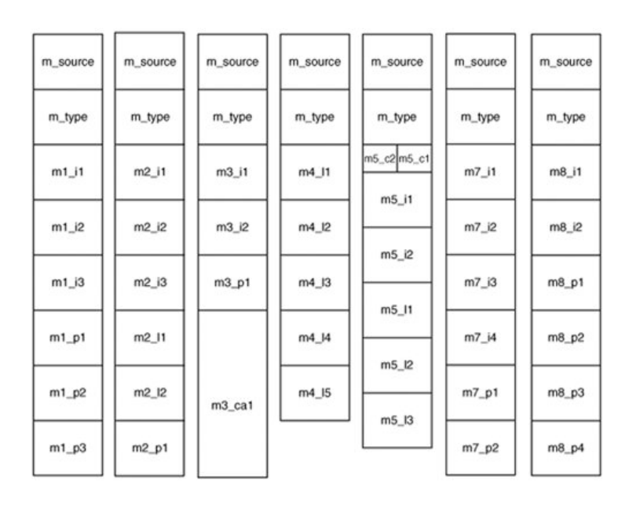

Inter-Process Communication
Data structures and function prototypes for interprocess communication are defined in ipc.h. A message is defined as a structure containing a union of the various message types that are possible. Seven message formats, mess_1 through mess_8, are defined (type mess_6 is obsolete). A message is a structure containing a field m_source, telling who sent the message, a field m_type, telling what the message type is (e.g., SYS_EXEC to the system task) and the data fields.
The seven message types are shown in Figure below.

Function calls that are used for inter-process communication (message passing):
-
send(dest, &message) - To send message to process dest
-
receive(source, &message) - To receive message from process source
-
sendrec(src-dest, &message) - To send message and wait for reply from the same process.
The second parameter in each call is the local address of the message data. Message passing mechanism in the kernel copies the message from the sender to the receiver. Reply for sendrec, overwrites the original message.
Each task, driver, or server is allowed to exchange message only with certain other processes.
-
Usual flow of messages is downward in the layers
-
Messages can be between processes in same layer or between processes in adjacent layers.
-
User processes cannot send messages to each other
-
User processes in layer 4 can initiate messages to servers in layer 3 and server in layer 3 can initiate message to drivers in layer 2
-
When a process sends a message to a process which is not waiting for a message, the sender blocks until the destination does a receive.
notify(dest) - When a process needs to make another process aware that something important has happened.
-
notify is non-blocking i.e. sender continues to execute whether or not recipient is waiting.
-
Information conveyed is limited, in general only identity of sender and the time-stamp.
-
This is important when debug dump is to be created as one kind of debug dump corresponds to a particular event. Eg. Ethernet dump will be created only when dump-ethernet stat key is pressed.
-
Sometimes notification is not sufficient, then the receiver can send request to the sender for more information.
-
Notify call can be made even when the recipient has not done a receive. But those notifications that cannot be received are stored, so that recipient can be informed when it calls receive next time. Pending notification can be stored in recipients pending-notification-bitmap
Reference:
-
Operating System Design and Implementation, Third Edition By Andrew S. Tanenbaum and Albert S. Woodhull